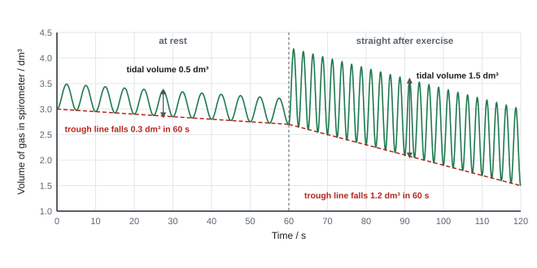
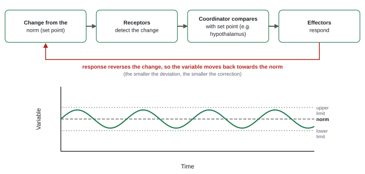
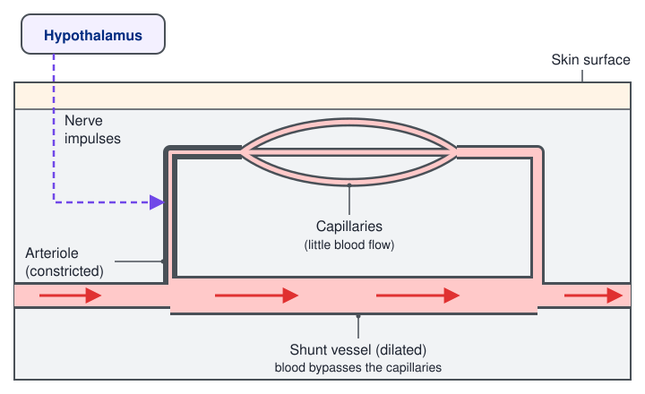
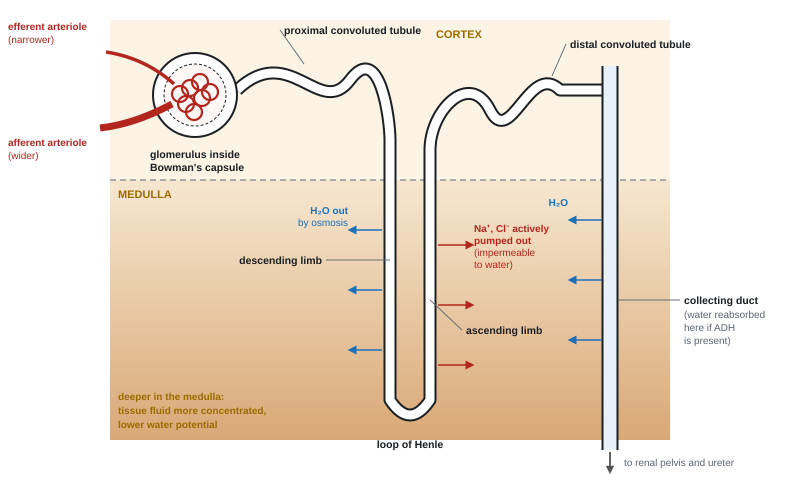

Control of the Internal Environment
Body cells work only if the conditions around them stay within narrow limits. This page covers how heart rate, cardiac output and breathing respond to exercise, then feedback and homeostasis, thermoregulation, the kidney, ADH, and how hormones switch genes on and off.
Spec7.13Cardiac output; control of heart rate and ventilation
(i) Calculate cardiac output. (ii) Understand how changes in ventilation and cardiac output deliver O₂ to the tissues and remove CO₂ quickly, including how heart rate and ventilation rate are controlled by the cardiovascular control centre and the ventilation centre in the medulla oblongata.
Cardiac output
Cardiac output = stroke volume × heart rate
- Stroke volume: volume of blood pumped out of the left ventricle in one beat (cm³).
- Heart rate: beats per minute.
- Cardiac output: volume of blood pumped per minute (cm³ min⁻¹ or dm³ min⁻¹). About 5 dm³ min⁻¹ at rest; 20–30 dm³ min⁻¹ in hard exercise.
Worked example: cardiac output
One cardiac cycle takes 0.80 s, so heart rate = 60 ÷ 0.80 = 75 beats min⁻¹. Stroke volume = 72 cm³.
Cardiac output = 72 × 75 = 5400 cm³ min⁻¹ = 5.4 dm³ min⁻¹ (÷ 1000).
Rearranged: cardiac output 4500 cm³ min⁻¹ and heart rate 51 beats min⁻¹ give stroke volume = 4500 ÷ 51 = 88.24 cm³ (WBI15 Jun 2021).
Percentage increase from rest (4000 cm³ min⁻¹) to exercise (21 250 cm³ min⁻¹) = (21 250 − 4000) ÷ 4000 × 100 = 431%.
At rest: heart rate 65 bpm and stroke volume 70 cm3, so cardiac output = 65 × 70 = 4550 cm3 min-1.
After the swim: cardiac output is 10 800 cm3 min-1 and heart rate is 120 bpm.
Change in cardiac output = 10 800 − 4550 = 6250 cm3 min-1.
Stroke volume after the swim = 10 800 ÷ 120 = 90 cm3.
Rearranging the same equation gives the missing variable. Both rising heart rate and rising stroke volume account for the increase.
- Trained athletes have a larger, stronger left ventricle, so a bigger stroke volume. They get the same resting cardiac output with a lower resting heart rate, and reach a higher maximum cardiac output.
The first interactive diagram at the foot of the page shows heart rate, stroke volume and cardiac output together, for an untrained person and a trained athlete.
Why cardiac output and ventilation rise together in exercise
- Working muscles respire faster, so they use more O₂ and make more CO₂ (and heat).
- Higher cardiac output delivers O₂ and glucose faster and carries CO₂ away faster.
- Higher ventilation (faster, deeper breathing) keeps alveolar air high in O₂ and low in CO₂, so the diffusion gradients across the alveolar walls stay steep.
- Blood is redistributed: arterioles supplying skeletal muscle (and the skin, for heat loss) dilate, while those supplying the gut and kidneys constrict.
Control of heart rate
- The cardiovascular control centre is in the medulla oblongata.
- It receives impulses from:
- chemoreceptors in the aortic bodies, carotid bodies and medulla, which detect rising CO₂ / falling pH (CO₂ dissolves in plasma, forming carbonic acid, which releases H⁺);
- baroreceptors in the aortic arch and carotid sinuses, which detect blood pressure;
- stretch receptors in muscles and joints, which detect movement at the start of exercise.
- It responds by changing the impulses sent to the SAN:
- more impulses along the sympathetic (accelerator) nerve → noradrenaline released at the SAN → SAN depolarises more frequently → heart rate rises (and the ventricles contract more strongly, raising stroke volume);
- more impulses along the parasympathetic vagus nerve → acetylcholine released at the SAN → SAN fires less often → heart rate falls.
| Change detected | Receptors | More impulses along | Heart rate |
|---|---|---|---|
| CO₂ rises, pH falls (exercise) | chemoreceptors | sympathetic nerve to SAN | rises |
| CO₂ falls, pH rises (after exercise) | chemoreceptors | vagus (parasympathetic) nerve to SAN | falls |
| Blood pressure rises | baroreceptors | vagus nerve to SAN | falls |
| Blood pressure falls | baroreceptors | sympathetic nerve to SAN | rises |
Control of ventilation
- The ventilation centre is in the medulla oblongata. It sends impulses rhythmically to the external intercostal muscles and diaphragm, which contract to breathe in.
- When CO₂ rises (pH falls), chemoreceptors in the medulla and in the carotid and aortic bodies send more impulses to the ventilation centre. It sends more frequent impulses to the intercostal muscles and diaphragm, so breathing becomes faster and deeper.
- Stretch receptors in the walls of the bronchioles send impulses when the lungs inflate. These inhibit inspiration, so breathing out follows and the lungs don't over-inflate.
- At rest, breathing out is mostly passive: the muscles relax and the lungs recoil elastically.
- When CO₂ falls back after exercise, fewer impulses reach the breathing muscles, and the rate and depth fall.
- Heart rate rising (any 4): "increase in blood CO₂ / decrease in pH"; "detected by chemoreceptors"; "impulses to the cardiovascular control centre in the medulla oblongata"; "more impulses via the sympathetic nerve to the SAN"; "SAN depolarises more frequently"; "heart muscle contracts more often". Baroreceptors and adrenaline are accepted alternatives.
- Slowing: pH rises after exercise; impulses along the parasympathetic / vagus nerve slow the SAN.
- Ventilation: "chemoreceptors"; "impulses to the ventilation centre in the medulla"; "more impulses to the intercostal muscles and diaphragm"; "increased rate (and depth) of breathing".
- Cardiac output: "heart rate × stroke volume"; it "measures the volume pumped per minute, so allows for different heart sizes". Athletes: "higher stroke volume, so lower resting heart rate for the same output".
- Write "impulses", never "signals" or "messages". Write "more" impulses.
Often asked as: cardiac output, stroke volume or heart rate calculations (with units and s.f.); how heart rate rises in exercise or falls afterwards; how breathing rate is controlled; 6-mark questions on the heart and exercise (athletes v non-athletes); blood redistribution to skin and muscles.
- Describing what happens during exercise when the question asks about recovery (or surfacing after a dive).
- Saying the vagus nerve "sends impulses to the medulla". It carries impulses from the medulla to the SAN.
- Saying impulses reach the diaphragm along "sympathetic nerves". The breathing muscles are stimulated by motor neurones (intercostal and phrenic nerves), not the autonomic system.
- Finishing a ventilation answer by talking about heart rate.
- Thinking breathing rate rises because heart rate rises (or the reverse). Both respond to the same rise in CO₂.
- Forgetting stroke volume: cardiac output rises in exercise because both heart rate and stroke volume rise.
Examined in past papers even though the spec doesn't list it.
- Cardiac index = cardiac output ÷ body surface area, in dm³ min⁻¹ m⁻² (WBI15 Jun 2022).
- Alveolar ventilation = (tidal volume − dead space) × breathing rate: (500 − 150) × 12 = 4200 cm³ min⁻¹ = 4.2 dm³ min⁻¹; × 60 = 250 dm³ h⁻¹ to 2 s.f. Units missing or wrong capped it at 2 marks (WBI15 Jan 2022).
- Lung stretch receptors inhibiting inspiration (WBI15 Jun 2022 article).
- Diving seals: the heart rate slows a lot during a dive (WBI15 Oct 2025).
Spec7.14Adrenaline and the fight-or-flight response
Understand the role of adrenaline in the fight-or-flight response.
What triggers it
- A threat (or the anticipation of exercise) is detected. The hypothalamus activates the sympathetic nervous system.
- Sympathetic neurones stimulate the adrenal medulla (the inner part of each adrenal gland, on top of the kidneys) to secrete adrenaline into the blood.
- Adrenaline reaches every tissue, but it only affects target cells that have adrenaline receptors on their cell surface membranes.
How it acts on a target cell
- Adrenaline can't cross the membrane, so it binds to receptors on the cell surface membrane.
- This activates an enzyme (adenylyl cyclase) that makes a second messenger, cAMP, inside the cell. cAMP activates a cascade of enzymes, so one adrenaline molecule has a large, fast effect. Peptide hormones work the same way (7.22).
- Adrenaline is an amine hormone (made from the amino acid tyrosine), not a peptide or a steroid.
The effects: ready to fight or run
| Effect | How it helps |
|---|---|
| Heart rate and stroke volume rise (adrenaline acts on the SAN and the ventricle muscle) | higher cardiac output: O₂ and glucose reach the muscles faster |
| Vasodilation of arterioles to skeletal muscle; vasoconstriction of arterioles to the gut and skin | blood redirected to the muscles |
| Bronchioles dilate; breathing becomes faster and deeper | more O₂ in, more CO₂ out |
| Liver glycogen → glucose | more blood glucose for respiration |
| Pupils dilate (radial muscles of the iris contract, circular muscles relax) | more light enters the eye |
| Digestion slows (gut muscle relaxes) | blood and energy diverted to the muscles |
| Greater mental alertness | faster reactions |
- Role (any 3): "released into the blood from the adrenal glands"; "binds to receptors on target cells / organs"; then named effects: "increased heart rate", "vasodilation in muscle", "increased ventilation rate", "pupil dilation", "relaxation of gut muscle / decreased digestion", "glycogen to glucose in the liver".
- Pupil: "sympathetic / motor neurones stimulated", "circular muscles relax", "radial muscles contract".
- Combination data (heart rate of Daphnia): heart rate rose with adrenaline and fell with nicotine; highest rate with the most adrenaline and least nicotine. Use the combination of chemicals, as the question asked (WBI15 Oct 2023).
Often asked as: MCQs naming the hormone and its effects on breathing and heart rate; describe the role of adrenaline in fight or flight; adrenaline and the pupil; 6-mark question on ageing and the heart's response to adrenaline.
- Leaving out the two points few candidates gave: adrenaline is released into the blood from the adrenal glands, and it binds to receptors.
- Calling adrenaline a peptide hormone, or saying it enters the cell. It's an amine that acts at the cell surface.
- Telling the whole iris reflex story when the question is about adrenaline.
- Confusing adrenaline (a hormone from the adrenal medulla) with noradrenaline (the neurotransmitter released by sympathetic neurones at the SAN).
Examined in past papers even though the spec doesn't list it.
- Adrenaline acting directly on the SAN is credited as an alternative route for raising heart rate (WBI15 Oct 2022, Oct 2023).
- Ageing reduces the heart's response to adrenaline: use all three graphs (heart rate, cardiac index, blood pressure), compare older and younger people, and comment on the error bars (WBI15 Jun 2022, 6-mark).
- Adrenaline also counted as a neurotransmitter in an MCQ pair (WBI15 Jan 2026).
Spec7.15Core Practical 17: exercise and spirometer traces
Investigate the effects of exercise on tidal volume, breathing rate, minute ventilation and oxygen consumption, using data from spirometer traces.
How a spirometer works
- A chamber of air (or medical-grade oxygen) floats over water. The subject breathes in and out of it through a mouthpiece, wearing a nose clip. The chamber rises and falls, and a pen or sensor records a trace of volume against time.
- Soda lime absorbs the CO₂ breathed out, so it isn't breathed back in. As the subject uses O₂, the total volume of gas in the chamber falls, so the trace slopes downwards. The slope gives the rate of O₂ consumption.
Reading the trace
| Measurement | Meaning | How to read it |
|---|---|---|
| Tidal volume | volume of air breathed in (or out) in one normal breath | height from a peak to the next trough |
| Breathing rate | breaths per minute | count the peaks in a known time, then convert to per minute |
| Minute ventilation | volume of air breathed in per minute | tidal volume × breathing rate |
| O₂ consumption | volume of O₂ used per minute | fall in a line through the troughs (or peaks) ÷ time |
| Vital capacity | largest volume breathed out after the deepest possible breath in | biggest peak-to-trough height |

Worked example: reading the trace above
At rest: 12 peaks in 60 s → breathing rate = 12 breaths min⁻¹. Peak to trough = 0.5 dm³ (tidal volume).
Minute ventilation = 0.5 × 12 = 6.0 dm³ min⁻¹.
The trough line falls from 3.0 to 2.7 dm³ in 60 s → O₂ consumption = 0.3 dm³ min⁻¹ (5.0 × 10⁻³ dm³ s⁻¹).
After exercise: 24 peaks in 60 s → 24 breaths min⁻¹; tidal volume = 1.5 dm³; minute ventilation = 1.5 × 24 = 36 dm³ min⁻¹, six times the resting value.
The trough line falls from 2.7 to 1.5 dm³ in 60 s → O₂ consumption = 1.2 dm³ min⁻¹, four times the resting rate.
Core practical 17: rest and exercise
- Check the subject is healthy (no asthma, heart or breathing problems) and has given informed consent.
- Fill the spirometer. Check the soda lime is fresh. Fit a sterilised or new mouthpiece and a nose clip.
- Let the subject breathe normally to get used to the apparatus, then record for 1–2 minutes at rest.
- The subject does a standard exercise, e.g. step-ups at a fixed rate (set by a metronome) for 2 minutes.
- Reconnect immediately and record for 1–2 minutes. Keep recording to find how long breathing takes to return to the resting rate (recovery time).
- Repeat with other subjects (resting between trials) and calculate means.
Why the values rise in exercise
- Muscles respire faster to make more ATP, so they use more O₂ and make more CO₂.
- CO₂ lowers blood pH. Chemoreceptors detect this, and the ventilation centre sends more impulses to the diaphragm and intercostal muscles: breathing becomes deeper (tidal volume up) and faster, so minute ventilation rises.
- O₂ consumption stays above the resting rate for a while after exercise (the oxygen debt, 7.5).
Variables, safety and errors
- Control: use the same subject, or match age, sex, mass and fitness; same type, intensity and length of exercise; same room temperature.
- Safety: sterilise the mouthpiece; use fresh soda lime (otherwise CO₂ builds up and the subject becomes dizzy); stop if the subject feels unwell; soda lime is corrosive.
- Errors: leaks at the mouthpiece or nose; breathing unnaturally through a mouthpiece (practise first); exhausted soda lime makes O₂ use look too low; a sloping trace is hard to read by eye (use a digital spirometer, or average several breaths).
- Minute ventilation = "tidal volume × breathing rate". Alveolar ventilation uses a formula given in the question.
- Give the s.f. asked: 0.54 breaths s⁻¹ × 60 = 32.4 breaths min⁻¹; × 0.04 dm³ = 1.3 dm³ min⁻¹. "1.30" scored only 1 mark (WBI15 Jun 2023).
- O₂ consumption from the slope of the trace, with units (e.g. dm³ s⁻¹).
- Ventilation rises because "chemoreceptors detect the fall in pH / rise in CO₂", "impulses to the intercostal muscles and diaphragm", "muscles need more ATP, so more O₂ for aerobic respiration".
Often asked as: not shown as a trace in any WBI15 paper from 2020 to 2026, so a likely future question; ventilation calculations from given numbers (WBI15 Jan 2022, Jun 2023). Unit 6 asks for trace reading and the plan.
- Measuring tidal volume from zero, or from the baseline, to a peak. It's peak to the next trough.
- Forgetting why the trace falls: O₂ is used up and the CO₂ is absorbed.
- Not converting cm³ to dm³ (÷ 1000), or not rounding to the s.f. asked.
Spec7.16Negative and positive feedback
(i) Understand what is meant by negative feedback and positive feedback. (ii) Understand how negative feedback keeps systems within narrow limits.
Negative feedback
- A change away from the norm (set point) is detected by receptors. A coordinator (e.g. the hypothalamus) compares it with the set point and sends impulses or hormones to effectors. Their response reverses the change, bringing the variable back towards the norm.
- Once the variable is back at the norm, the receptors stop detecting a change, so the corrective response is switched off.

How negative feedback keeps conditions within narrow limits
- Receptors monitor the variable all the time, so even a small change is detected and corrected before it grows.
- The bigger the change, the bigger the correction. As the variable nears the norm, the correction shrinks, so there's little overshoot.
- There are usually separate mechanisms for correcting a rise and a fall (sweating v shivering; insulin v glucagon). Having both gives more control and a faster response in either direction.
- The result is a dynamic equilibrium: the variable fluctuates slightly around the set point but stays within narrow limits.
Positive feedback
- A change triggers a response that increases the change further, moving the variable even further from where it started. It amplifies the change instead of reversing it.
- It is useful only when a fast, large change is needed and something else then ends it:
- Depolarisation of a neurone: a few Na⁺ channels open → Na⁺ diffuses in → the membrane depolarises → more voltage-gated Na⁺ channels open → more depolarisation, until an action potential is reached.
- Childbirth: contractions of the uterus → more oxytocin released → stronger contractions, until the baby is born.
- Blood clotting: activated platelets release substances that activate more platelets.
- It is harmful when homeostasis breaks down. In hypothermia, a lower body temperature slows metabolism, so less heat is released and the temperature falls further.
Worked example: calculating a range
Blood calcium is kept within 6% of 91 mg dm⁻³. 6% of 91 = 0.06 × 91 = 5.46.
Range = 91 − 5.46 to 91 + 5.46 = 85.54 to 96.46 mg dm⁻³ (WBI15 Oct 2024). Calculate both limits.
- Difference: "positive feedback increases the change in the variable; negative feedback decreases / reverses the change, returning it to normal".
- Negative feedback (2): "change detected by a receptor"; "effector stimulated that counteracts the change".
- Narrow limits: "constant monitoring", "small deviations detected and corrected", "separate mechanisms to correct a rise and a fall", "response switched off once back at the norm".
- Depolarisation as positive feedback (any 4): "neurotransmitter binds, a few Na⁺ channels open"; "Na⁺ enters and depolarises the membrane slightly"; "more Na⁺ channels open"; "the membrane depolarises further"; "continues until an action potential". Write "sodium ions"; potassium ions are ignored.
Often asked as: describe the difference between negative and positive feedback; explain how negative feedback keeps a system within narrow limits; why depolarisation is positive feedback; 6-mark negative feedback of blood glucose; calculate the limits of a range.
- Defining negative feedback, then giving only an example for positive feedback with no definition.
- Thinking negative feedback only lowers a variable. It opposes a change in either direction; positive feedback reinforces it.
- Giving only the detection, or only the effector, in a 2-mark answer.
- Writing "negative feedback" when the question asks for the name of the process (homeostasis, osmoregulation).
Examined in past papers even though the spec doesn't list it.
- Blood glucose control (insulin, glucagon, glycogenesis, glycogenolysis) is the example in a 6-mark negative feedback question. The top level needs the switch-off: less insulin (or glucagon) once glucose is back to normal. Don't confuse glucagon with glycogen (WBI15 Jan 2023).
- Positive feedback is examined at the action potential, not childbirth or clotting (WBI15 Jan 2026).
Spec7.17Homeostasis and thermoregulation
Understand what is meant by homeostasis and why it matters for keeping the body in dynamic equilibrium during exercise, including the role of the hypothalamus in thermoregulation.
Homeostasis
- Homeostasis: maintaining a constant internal environment, within narrow limits, despite changes inside and outside the body. It is a dynamic equilibrium: values fluctuate slightly around a set point and are constantly corrected by negative feedback.
- Why it matters:
- Temperature: enzymes work best near 37 °C. Too hot and they denature; too cold and reactions slow down.
- pH: changes alter the charges on amino acid R groups, changing the shape of enzymes and other proteins.
- Water potential of the blood: too low and cells shrink as water leaves by osmosis; too high and cells swell and may burst.
- Blood glucose: enough for respiration, but not so much that it lowers the water potential of the blood.
Dynamic equilibrium during exercise
Exercise pushes several variables away from the norm at once. Homeostatic mechanisms bring them back:
| Exercise causes | Detected by | Correction |
|---|---|---|
| more heat from respiration: core temperature rises | thermoreceptors → hypothalamus | sweating; vasodilation in the skin |
| more CO₂: blood pH falls | chemoreceptors → medulla | faster, deeper breathing; higher heart rate |
| glucose used faster: blood glucose falls | pancreas | glucagon (and adrenaline): liver glycogen broken down to glucose |
| water lost in sweat: blood water potential falls | osmoreceptors → hypothalamus | more ADH, less urine (7.21) |
Thermoregulation: the role of the hypothalamus
- Thermoreceptors in the hypothalamus detect the temperature of the blood flowing through it (core temperature). Thermoreceptors in the skin detect changes in the outside temperature early.
- The thermoregulatory centre in the hypothalamus (with a heat loss centre and a heat gain centre) compares the temperature with the set point (about 37 °C) and sends impulses along motor and sympathetic neurones to the effectors.
| Too hot: heat loss centre | Too cold: heat gain centre |
|---|---|
| Vasodilation: arterioles supplying the skin capillaries dilate, so more blood flows near the surface and more heat is lost by radiation | Vasoconstriction: skin arterioles constrict, so blood is diverted through shunt vessels away from the surface and less heat is lost |
| Sweating: water evaporates from the skin, using heat energy from the body | Less sweat produced |
| Hair erector muscles relax: hairs lie flat, trapping less insulating air | Hair erector muscles contract: hairs stand up and trap insulating air (little effect in humans) |
| Metabolic rate lowered | Shivering: rapid, involuntary muscle contractions; respiration releases heat |
| More adrenaline and thyroxine raise the metabolic rate |

The second interactive diagram at the foot of the page shows this negative feedback at work.
- Homeostasis: "maintaining the body in a state of dynamic equilibrium" or "maintaining a constant internal environment". A described example is ignored.
- Thermoregulation (any 3–4): "negative feedback"; "thermoreceptors detect an increase above 37 °C"; "impulses to the thermoregulatory centre / hypothalamus" ("heat loss centre" accepted); "impulses via motor / sympathetic neurones to a named effector"; "a response that increases heat loss or reduces heat gain" (vasodilation, sweat glands, hair erector muscles, lower metabolic rate). "Signal" is rejected; "control centre" on its own is ignored.
- Heat loss in exercise (graph): rises, then reaches a maximum and levels off. "Comment" means describe, not explain.
Often asked as: state what homeostasis means; describe the role of the hypothalamus in keeping temperature steady; temperature control during exercise (humans, kangaroo rats); describe heat-loss graphs; how a seizure raises body temperature.
- "Capillaries dilate" or "blood vessels move closer to the skin." The arterioles dilate or constrict; no vessels move.
- Describing the response (more sweating) without saying how the effector is stimulated: impulses along neurones from the hypothalamus.
- "Signals" or "messages" instead of impulses.
- Giving an example of homeostasis instead of the definition, or "keeping conditions constant" with no idea of narrow limits.
Examined in past papers even though the spec doesn't list it.
- The heat loss centre of the hypothalamus is credited by name (WBI15 Jan 2024, Oct 2024).
- Blood redistributed by vasodilation to the skin (heat loss) and the muscles (oxygen) during exercise, so less reaches the kidneys (WBI15 Jan 2026).
- Insulin falls during exercise: read the negative values on a "change in insulin" axis carefully, and watch the time units (WBI15 Jan 2025).
Spec7.18Structure of the mammalian kidney
Know the gross (whole-organ) and microscopic structure of the mammalian kidney.
Gross structure (a kidney cut lengthways)
| Region | What's there |
|---|---|
| Fibrous capsule | tough outer layer that protects the kidney |
| Cortex | outer region: glomeruli, Bowman's capsules, proximal and distal convoluted tubules |
| Medulla | inner region, arranged in cone-shaped pyramids: loops of Henle and collecting ducts (plus blood vessels) |
| Renal pelvis | funnel-shaped space where the collecting ducts empty urine; leads into the ureter |
| Renal artery | brings blood (containing urea) from the aorta |
| Renal vein | takes filtered blood to the vena cava |
| Ureter | carries urine to the bladder |
The nephron
Each kidney contains about a million nephrons. Follow the filtrate:
- Bowman's capsule (cortex): a cup around the glomerulus, a knot of capillaries. Ultrafiltration happens here (7.19).
- Proximal convoluted tubule (PCT) (cortex): selective reabsorption of glucose, amino acids, most ions and much of the water (7.20).
- Loop of Henle (a descending limb and an ascending limb dipping into the medulla): makes the medulla tissue fluid very concentrated, so water can be reabsorbed later (7.20).
- Distal convoluted tubule (DCT) (cortex): fine-tunes the balance of ions and pH; its water permeability is controlled by ADH.
- Collecting duct (cortex down through the medulla): water is reabsorbed by osmosis when ADH is present. It carries urine to the renal pelvis.
Blood supply: renal artery → afferent arteriole (wider) → glomerulus → efferent arteriole (narrower) → capillaries around the tubules and alongside the loop of Henle → renal vein.

Microscopic features to recognise
| Structure | Features | Link to function |
|---|---|---|
| Glomerular capillary wall | endothelium with pores (fenestrations) | lets plasma through, holds back blood cells |
| Basement membrane | a mesh of collagen and glycoproteins | the filter: stops plasma proteins |
| Inner wall of Bowman's capsule | podocytes: cells with foot-like extensions and filtration slits between them | filtrate passes between them into the capsule |
| PCT cells | microvilli (brush border) on the side facing the lumen; many mitochondria near the base; infolded basal membrane; tight junctions between cells | large surface area for reabsorption; ATP for active transport |
- Juxtamedullary nephrons have their glomeruli near the medulla and long loops of Henle that reach deep into it. Most nephrons (cortical nephrons) have short loops.
- Path of a water molecule: Bowman's capsule → proximal convoluted tubule → loop of Henle → distal convoluted tubule → collecting duct.
- Drawing Bowman's capsule: a cup around the glomerulus with the PCT leaving it; labels such as efferent arteriole, podocytes, basement membrane, squamous epithelium. Label lines must end on the structure. Don't label the structure the question already names.
- PCT cell (3 marks): "microvilli / brush border on the lumen side give a large surface area"; "mitochondria in the basal cytoplasm supply ATP"; describing the orientation (apical v basal) is a separate mark.
- "The basement membrane prevents plasma proteins from being filtered."
Often asked as: locate the cortex, medulla, pelvis, ureter, renal artery and vein; where Bowman's capsule is (the cortex); draw a labelled Bowman's capsule; which part responds to ADH (collecting duct); PCT cell micrographs; magnification and area calculations.
- Leaving the location of Bowman's capsule blank, or placing it in the medulla. It's in the cortex.
- Naming microvilli and mitochondria without saying where in the cell they are.
- Putting units on a magnification.
- Using the diameter instead of the radius for the area of a vessel (πr²).
Examined in past papers even though the spec doesn't list it.
- Podocytes, fenestrations, the fibrous capsule and brush-border orientation are credited (WBI15 Jun 2022, Jun 2024).
- Calculations on kidney structures: magnification and volume of a Bowman's capsule (sphere: ⁴⁄₃πr³) (WBI15 Oct 2024); area of a renal vein from its diameter (WBI15 Jun 2021).
Spec7.19Urea production and ultrafiltration
Understand how urea is made in the liver from excess amino acids (no ornithine cycle detail needed) and how it is removed from the blood by ultrafiltration.
Making urea in the liver
- Amino acids can't be stored. Excess amino acids are carried in the blood to the liver.
- Deamination: the amine group (–NH₂) is removed, forming ammonia (NH₃). Ammonia is very soluble and very toxic.
- The rest of the amino acid (a keto acid) is respired (it can enter the Krebs cycle) or converted to glucose, glycogen or fat for storage.
- Ammonia is combined with CO₂ to make urea, which is far less toxic, in the ornithine cycle (you don't need the details):
- 2NH₃ + CO₂ → CO(NH₂)₂ + H₂O
- Urea dissolves in the plasma and is carried to the kidneys.
Ultrafiltration in the glomerulus
- The afferent arteriole has a wider diameter than the efferent arteriole. Blood enters the glomerulus faster than it can leave, so a high hydrostatic pressure builds up in the glomerular capillaries.
- The pressure forces small molecules out of the blood into the Bowman's capsule, through three layers:
- pores (fenestrations) in the capillary endothelium,
- the basement membrane (the actual filter),
- the filtration slits between the podocytes.
- It's filtration by size, under pressure. It isn't selective about whether a substance is useful: that's sorted out later by selective reabsorption.
| Filtered (in the glomerular filtrate) | Not filtered (stays in the blood) |
|---|---|
| water, glucose, amino acids, urea, ions (Na⁺, Cl⁻, K⁺), vitamins, creatinine | red and white blood cells, platelets, large plasma proteins (albumin, fibrinogen, prothrombin) |
- About 125 cm³ of filtrate is formed per minute (about 180 dm³ a day), and almost all of it is reabsorbed.
Comparing plasma, filtrate and urine
| Substance | Plasma / g dm⁻³ | Glomerular filtrate / g dm⁻³ | Urine / g dm⁻³ |
|---|---|---|---|
| Protein | 80 | 0 | 0 |
| Glucose | 1.0 | 1.0 | 0 |
| Urea | 0.3 | 0.3 | 20 |
| Na⁺ | 3.2 | 3.2 | about 3.5 (varies) |
(Typical values.)
Worked example: what the table shows
Protein: in plasma but not in the filtrate, so it is too large to pass through the basement membrane.
Glucose: the same in plasma and filtrate (freely filtered) but absent from urine, so it is all reabsorbed (in the PCT).
Urea: urine ÷ filtrate = 20 ÷ 0.3 = 67 times more concentrated, because most of the water has been reabsorbed (even though some urea diffuses back).
Water: 180 dm³ of filtrate a day but only 1.5 dm³ of urine: (180 − 1.5) ÷ 180 × 100 = 99.2% of the water is reabsorbed.
Filtration rate: 6000 cm³ of filtrate per hour × 24 = 144 000 cm³ = 144 dm³ per day (WBI15 Jan 2025).
- Excess amino acids (any 3): "transported to the liver"; "amine group removed by deamination"; "converted to urea"; "in the ornithine cycle". ("Ammonia" and "amino group" are ignored.) The remainder may become keto acids, glucose or pyruvate.
- Ultrafiltration (2–3): "high (hydrostatic) pressure in the glomerulus"; "afferent arteriole has a wider diameter than the efferent arteriole"; "small molecules forced through pores / fenestrations and the basement membrane". "Arteriole" is accepted, "artery" is not. "Pressure" alone isn't enough: say where it is high.
- Large molecules (haemoglobin, prothrombin, plasma proteins) are not filtered; the basement membrane is the filter.
Often asked as: describe what happens to excess amino acids; explain how urea (or creatinine) is removed from the blood; the effect of a wider afferent arteriole; which substances are filtered; filtration-rate calculations with unit conversions.
- Describing the digestion of protein to amino acids when the question asks what happens to the amino acids.
- Vague "pressure" answers that never say the pressure is high in the glomerulus, or why (the arteriole diameters).
- Saying urea is "actively secreted" into Bowman's capsule. It is filtered under pressure.
- Unit errors: g → mg is × 1000 (not ÷ 1000); hours → seconds is × 3600.
Examined in past papers even though the spec doesn't list it.
- The ornithine cycle is credited as a mark point even though its detail isn't required (WBI15 Jan 2025).
- Creatinine: a small molecule that is filtered and not reabsorbed, so the rate it appears in urine measures the filtration rate (WBI15 Oct 2021).
- Mass of glucose filtered per second, with g → mg and h → s conversions (WBI15 Oct 2024).
Spec7.20Selective reabsorption and the loop of Henle
Understand how solutes are selectively reabsorbed in the proximal tubule, and how the loop of Henle acts as a countercurrent multiplier to increase the reabsorption of water.
Selective reabsorption in the proximal convoluted tubule
- About two-thirds of the water and Na⁺ in the filtrate, all the glucose and amino acids (normally), and some urea are reabsorbed here.
- How glucose is reabsorbed (co-transport, an indirect form of active transport):
- Na⁺/K⁺ pumps in the basal membrane (the side next to the blood capillary) actively transport Na⁺ out of the PCT cell into the blood, using ATP. This keeps the Na⁺ concentration inside the cell low.
- Na⁺ diffuses from the lumen into the cell, down its concentration gradient, through co-transporter proteins in the membrane of the microvilli. Each carries a glucose (or amino acid) molecule with it, against the glucose concentration gradient.
- Glucose then leaves the cell on the blood side by facilitated diffusion, down its concentration gradient, and enters the capillaries.
- Cl⁻ follows the Na⁺. Removing all these solutes lowers the water potential of the tissue fluid and blood, so water follows by osmosis. Some urea diffuses back too.
- Adaptations of PCT cells: microvilli (large surface area); many mitochondria (ATP for active transport); many co-transporter and carrier proteins; infolded basal membrane; very close to the capillaries.
The loop of Henle: a countercurrent multiplier
- Ascending limb: impermeable to water. Na⁺ and Cl⁻ are actively transported out of it into the tissue fluid of the medulla.
- This raises the solute concentration (lowers the water potential) of the tissue fluid in the medulla.
- Descending limb: permeable to water (it has aquaporins), but much less permeable to ions. Water leaves it by osmosis into the concentrated tissue fluid and is carried away in the blood. The filtrate gets more and more concentrated on the way down.
- The filtrate is most concentrated at the hairpin bend. On the way up the ascending limb, ions are pumped out, so it becomes more dilute again.
- Countercurrent: the filtrate in the two limbs flows in opposite directions, side by side. At any level, the ascending limb can only make a small difference in concentration, but that small difference is multiplied along the length of the loop. The result is a steep gradient: the tissue fluid gets more and more concentrated (lower and lower water potential) deeper into the medulla.
- Why it matters: the collecting duct runs down through this concentrated medulla. Water leaves the collecting duct by osmosis all the way down (when ADH has made it permeable), so the urine becomes concentrated and water is conserved.
- Longer loops → a bigger gradient → more water reabsorbed → more concentrated urine. Desert mammals such as the kangaroo rat have very long loops of Henle.
Worked example: glucose in the urine
As plasma glucose rises, the mass of glucose filtered rises in proportion. Reabsorption also rises, until every co-transporter is working at its maximum rate; in WBI15 Jan 2026 this happened when plasma glucose rose above 12 mmol dm⁻³.
Above that, glucose is filtered faster than it can be reabsorbed, so the extra stays in the filtrate and appears in the urine (as in untreated diabetes).
A rise in plasma glucose from 5 to 35 mmol dm⁻³ is a (35 − 5) ÷ 5 × 100 = 600% increase (WBI15 Jan 2026).
- Glucose reabsorption (any 3): "in the proximal convoluted tubule"; "co-transport with sodium ions using carrier / transport proteins"; "glucose diffuses into the blood capillaries down its concentration gradient" (facilitated diffusion accepted). Say "sodium ions".
- Countercurrent multiplier (any 4): "filtrate flows in opposite directions in the two limbs"; "ions (Na⁺, Cl⁻) move out of the ascending limb"; "by active transport"; "increases the ion concentration / decreases the water potential of the surrounding fluid"; "water leaves the descending limb by osmosis (through aquaporins)". A concentration gradient "formed" along the loop is accepted.
- Desert mammals: "longer loop of Henle (more juxtamedullary nephrons)", "more Na⁺ pumped out of the ascending limb", "higher solute concentration in the medulla", "more water reabsorbed", "more mitochondria in the ascending limb". Behaviour (nocturnal, burrowing) is credited too.
Often asked as: describe how glucose is reabsorbed; explain how the loop of Henle acts as a countercurrent multiplier; adaptations of kangaroo rats, camels or other desert mammals; plasma–filtrate–urine data; graphs of glucose filtration v reabsorption.
- Explaining water movement well but being vague about the multiplier. Say which limb is permeable to what, and which way the ions move.
- "Sodium" instead of "sodium ions". "The tubes flow in opposite directions": it's the filtrate that flows.
- "There is a concentration gradient." Say the loop forms or increases one.
- Reversing the link: a high solute concentration means a low (more negative) water potential.
- Listing differences between two species without a reason for each.
Examined in past papers even though the spec doesn't list it.
- Secretion of substances into the tubule is credited in a data question on urine composition (WBI15 Jun 2021).
- Desert v wet-habitat mammals: medulla thickness, urine concentration, metabolic water, percentage calculations (WBI15 Oct 2020, Oct 2022, Jan 2024, Oct 2025).
Spec7.21ADH: controlling plasma concentration and blood volume
Understand how osmoreceptors in the hypothalamus, the pituitary gland and antidiuretic hormone (ADH) control the solute concentration of the plasma and the blood volume by negative feedback.
When the blood's water potential falls (sweating, not drinking, salty food)
- Osmoreceptors in the hypothalamus detect the fall in water potential: water leaves them by osmosis and they shrink.
- They stimulate neurosecretory cells in the hypothalamus. ADH is made in these cells, travels down their axons, and is released from the posterior pituitary gland into the blood. More ADH is released.
- ADH travels in the blood to the distal convoluted tubule and collecting duct, and binds to receptors on the cell surface membranes of their cells.
- This activates a second messenger (cAMP), which makes vesicles containing aquaporins (water channel proteins) fuse with the membrane facing the lumen.
- The walls become more permeable to water. More water leaves the filtrate by osmosis into the concentrated medulla, and back into the blood.
- A small volume of concentrated urine is produced. The blood's water potential rises back to normal, the osmoreceptors are no longer stimulated, and less ADH is released: negative feedback.
- Thirst is stimulated at the same time, so you drink more.
When the blood's water potential rises (drinking a lot of water)
- The osmoreceptors swell, and less ADH is released. Aquaporins are taken back into the cytoplasm in vesicles, so the DCT and collecting duct become less permeable to water. Less water is reabsorbed, giving a large volume of dilute urine, and the water potential falls back to normal.
Blood volume
- Reabsorbing more water also raises the blood volume (and blood pressure). If blood volume falls (after bleeding or heavy sweating), baroreceptors in the aortic arch and carotid arteries detect the lower pressure, and more ADH is released. A rise in blood volume reduces ADH release.
- Control chain (any 4): "osmoreceptors in the hypothalamus detect the water potential of the blood"; "impulses to the pituitary gland, which releases more / less ADH"; "ADH acts on the distal convoluted tubule / collecting duct"; "aquaporins inserted into the membrane / increased permeability to water"; "more / less water reabsorbed, restoring the blood water potential to normal".
- Too much water: "less ADH", "fewer aquaporins", "DCT / collecting duct less permeable", "more dilute urine".
- High blood volume is detected by baroreceptors in the carotid artery or aortic arch.
- Graphs: as ADH rises, urine concentration rises and the rate of urine production falls.
- "Concentration" on its own is ignored: use "water potential". "Tubules" on its own is ignored: name the DCT or collecting duct.
Often asked as: where ADH is produced and where it acts; name the receptor (osmoreceptor); describe how ADH changes the blood's water potential; the response to drinking a lot of water; keeping blood sodium within narrow limits; urine volume and concentration data after drinking water or salt solution; MDMA and ADH (6-mark).
- Writing chemoreceptors instead of osmoreceptors.
- "ADH makes the collecting duct less permeable" or "more permeable means more urine". It's the reverse.
- Leaving out the pituitary gland, or the ending: the blood's water potential returns to normal.
- "ADH affects ultrafiltration." It affects water reabsorption.
- Explaining the aquaporin mechanism in detail for a 2-mark "describe" question.
Examined in past papers even though the spec doesn't list it.
- Hyponatraemia: too much ADH means too much water is reabsorbed, so the blood Na⁺ concentration falls and water enters brain cells by osmosis (WBI15 Jun 2024).
- MDMA (ecstasy) increases ADH release, so less urine is made and water is retained (WBI15 Oct 2020, 6-mark).
- Why plasma solute concentration must stay within narrow limits: cells would shrink, or swell and burst, if the plasma's water potential changed (WBI15 Jan 2025).
- Aldosterone is accepted as another hormone controlling blood sodium (WBI15 Jan 2025).
Spec7.22Switching genes on and off: transcription factors and hormones
Understand how genes are switched on and off by transcription factors, including the role of peptide hormones acting from outside the cell and steroid hormones acting inside it.
Transcription factors
- A transcription factor is a protein that binds to a specific DNA base sequence, usually in the promoter region just before a gene, and controls whether that gene is transcribed.
- Activators help RNA polymerase bind to the promoter. The gene is transcribed into mRNA, which is translated into a protein: the gene is switched on.
- Repressors block the promoter (or stop activators binding). RNA polymerase can't bind, so the gene isn't transcribed: it is switched off.
- Every cell has the same genes. Which transcription factors are active decides which genes are expressed. That's how cells differentiate, and how they respond to signals such as hormones.
Steroid hormones: act inside the cell (e.g. oestrogen, testosterone)
- Steroids are lipid-soluble, so they diffuse through the phospholipid bilayer into the cell.
- In the cytoplasm or nucleus, the hormone binds to a specific receptor protein, forming a hormone–receptor complex.
- The complex acts as a transcription factor: in the nucleus, it binds to the promoter of its target genes.
- It activates (helps RNA polymerase bind) or represses transcription of those genes, so more (or less) of particular proteins is made.
- Example: oestrogen binds to its receptor; the complex switches on genes that make cells of the uterus lining divide.
Peptide hormones: act from outside the cell (e.g. insulin, glucagon, ADH)
- Peptide hormones are water-soluble and too large and charged to cross the membrane.
- The hormone binds to a specific receptor on the cell surface membrane (with a complementary shape).
- This activates a second messenger (such as cAMP) inside the cell, which starts a cascade of enzyme activations that amplifies the signal.
- The cascade can activate (or inactivate) transcription factors in the cytoplasm. Activated transcription factors move into the nucleus and switch their target genes on or off.
- Not every effect of a peptide hormone involves genes. ADH inserting aquaporins (7.21) happens without any new transcription.
| Steroid hormones | Peptide hormones | |
|---|---|---|
| Examples | oestrogen, testosterone, progesterone | insulin, glucagon, ADH (adrenaline, an amine, acts the same way) |
| Soluble in | lipids | water |
| Cross the membrane? | yes | no |
| Receptor | inside the cell (cytoplasm or nucleus) | on the cell surface membrane |
| Effect on genes | the hormone–receptor complex is the transcription factor | a second messenger cascade activates a transcription factor |
| Speed | slower to start, long-lasting | faster |
- Switching a gene off (any 3): "transcription factors are proteins"; "bind to the promoter / gene"; "cause methylation or deacetylation of histones" (ACCEPT "DNA wrapped more tightly"); "preventing RNA polymerase binding".
- Steroid hormones (any 3): "diffuse across the membrane into the cell / nucleus"; "bind to an intracellular receptor"; "the hormone–receptor complex acts as a transcription factor"; "activates or represses transcription". "Binds to cell membrane receptors" is rejected. Don't just repeat "regulate transcription" from the stem.
- Peptide hormone, growth factor or cytokine (any 3): "binds to a receptor on the cell surface membrane"; "activates a second messenger / signalling cascade and a transcription factor"; "the transcription factor binds to the promoter, so RNA polymerase binds"; "the gene is transcribed and the mRNA translated into the protein".
- Name the protein made when the context gives one (actin, myosin, troponin or tropomyosin for muscle; the enzymes that make dopamine).
- Use "fewer / reduced" when the question gives a fall: less testosterone enters cells → fewer hormone–receptor complexes → less transcription.
Often asked as: describe how genes are switched off by transcription factors; describe how steroid hormones regulate transcription; hormones, growth factors or cytokines leading to differentiation (muscle cells, stem cells, T cells); oestrogen and cell division; testosterone and muscle protein.
- Describing genes being switched on and off without ever mentioning transcription factors.
- Saying a peptide hormone (insulin, glucagon) enters the nucleus or is a transcription factor. Peptide hormones act at the cell surface (one mark scheme slipped on this: don't copy it).
- "Transcription factor → mRNA → dopamine." The mRNA is translated into an enzyme, and the enzyme makes dopamine.
- Generic answers that ignore the cell type or hormone named in the question.
- Copying phrases from the stem or the article.
Examined in past papers even though the spec doesn't list it.
- Epigenetics: methylation of DNA (at cytosine bases) and deacetylation of histones pack DNA tightly and silence genes. Histone acetylation removes positive charge, so DNA is wrapped less tightly and transcription can happen (WBI15 Jan 2023, Jan 2024).
- Genomic imprinting and Prader–Willi syndrome (WBI15 Jan 2024).
- Alternative splicing producing several forms of a receptor from a few genes (WBI15 Jun 2023).
Quick checks
What is the main purpose of the Bainbridge reflex?
Increased venous return stretches the atrial walls, which triggers faster heart rate through the sympathetic system. The first option describes the baroreceptor response instead, which is the commonest confusion between the two reflexes.
Which change would NOT help a person who has become too cold?
In cold conditions sweating is inhibited, because evaporation would lose heat. The other three responses all conserve or produce heat.
What is the effect of a high blood CO2 level on breathing?
Raised CO2 lowers blood pH, which the chemoreceptors detect. They send more impulses to the inspiratory centre, so breathing speeds up and deepens. Stretch receptors work on lung inflation, not on CO2 levels.
Which example is a positive feedback mechanism?
In clotting, each change reinforces the next, which is what positive feedback does. The other three options all bring a variable back towards a set point, which makes them negative feedback systems.